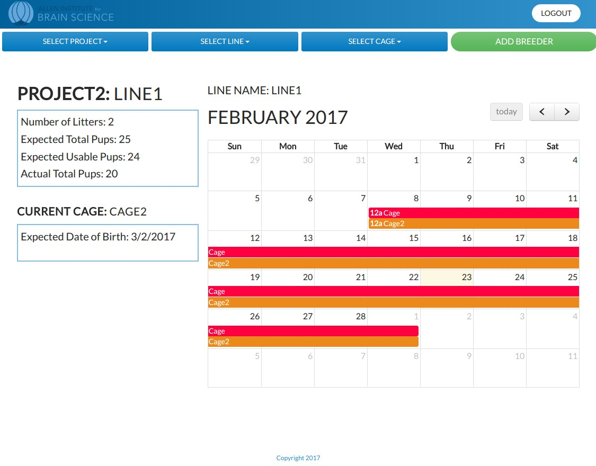
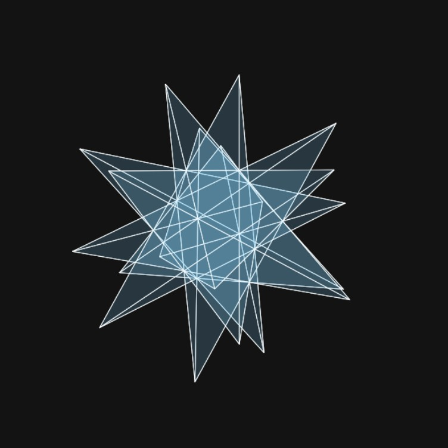
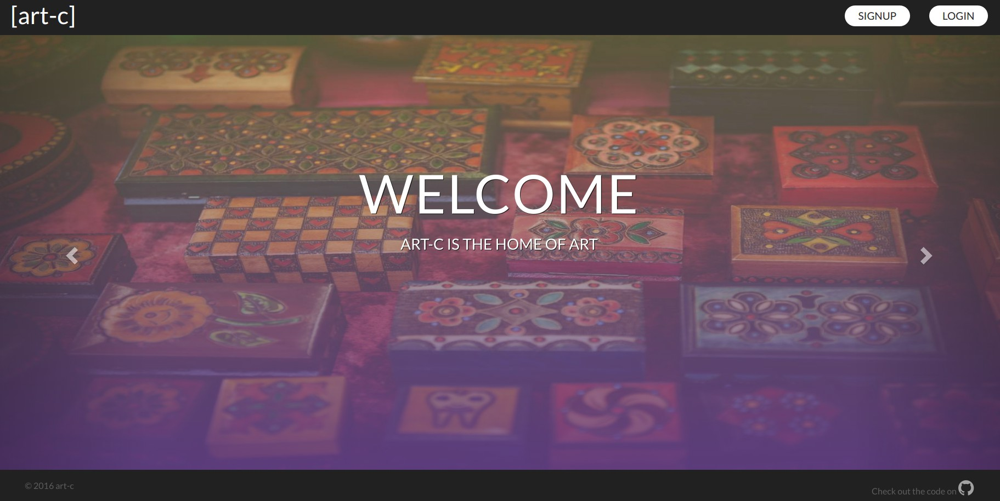
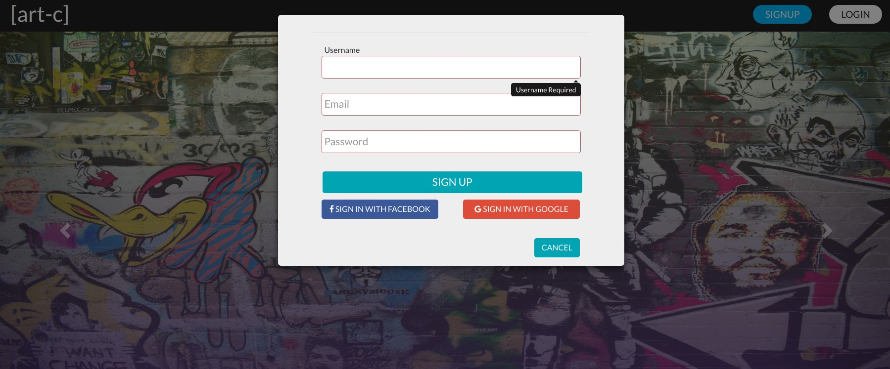

<main class="project-container">
  <div class="clearfix" ng-class="{'active': projectCtrl.isActive}">
    <div class="row star-bg">
      <h3 class="title">Selected Projects</h3>
      <hr class="dark-line">
    </div>

    <div class="project-menu-container clearfix">
      <div class="portfolio-img-container"
       ng-repeat="item in projectCtrl.items"
       item="projectCtrl.currentItem">
        <div class="square" ng-style="{'background-image': 'url({{item.url}})'}" >
            <div class="img-hover">
              <div class="content-wrap">
                <h3><strong>{{item.title}}</strong></h3>
                <h6>{{item.summary}}</h6>
                <!-- <span class="zoom-icon"><i class="fa fa-plus" ng-click="projectCtrl.selectItem(item.id)"></i></span> -->
                <a ui-sref="Projects.detail({projectId: item.id})">TESTING LINK</a>
              </div>
            </div>
          </div>
      </div>
    </div>

<div class="row">
    <div class="active-menu"
     ng-repeat="item in projectCtrl.items"
     item="projectCtrl.currentItem"
     ng-click="projectCtrl.selectItem(item.id)">
     <h4>{{item.title}}</h4>
  </div>
</div>

  <div class="row" ng-if="projectCtrl.isVisible1">
    <div class="info-container">
    <h4>Pup Tracker<span class="info-icon"><a href="https://github.com/prungy88/puptracker"><i class="fa fa-github icon2"></i></a><span></h4>

      <div class="info-body-container">
        <div class="row">
          <div class="col span-1-of-2">
            <h5>Summary</h5>
            <p class="extra-space">Rest API used by research scientists to track mouse breeding patterns, plan experiments, and communicate more
              effectively with mouse breeders and project managers.</p>
          </div>
          <div class="col span-1-of-2">
            <h5>Tools</h5>
            <p>Node, Angular, Webpack, Express, Angular UI Calendar, Bootstrap</p>
          </div>
        </div>
      <div class="row">
        </p><br>
        <h5>About</h5>
        <p>The research institute utilizes an SQL database to input information about mouse breeding cycles and their genetic makeup.
          Breeders and lab managers need to be able to have this information readily available to relay to researchers planning projects.
          The projects are large and have many lines of mice (mice of different genotypes). Each line of mice has a group of cages used to
          produce offspring (pups) that have desired genotypes, each which contains one or two females and a male. Researchers need to know
          a rough estimate of when mice of certain genotypes will be available and how many to expect per month.
          <br><br>
          They wanted to be able input information into the app and utilize dropdown menus that allow them to select the appropriate project,
          line, and cage and create/update models of each. Models are updated as information is known to the research team and stored and organized in the app.
          This updated information is used to calculate various properties that will be displayed when a line is selected.
        </p><br>
        <h5>Goals</h5>
        <p> 1. Use a calendar to visualize when mice of certain genotypes are going to be born.<br><br>
          2. Calculate expected number of usable offspring and breeding end dates based on user inputs.<br><br>
          3. Be able to create, update and remove project information.</p><br>
        <h5>Going Forward</h5>
        <p>There is a huge amount of potential for this project. After the core goals are met, the plan is to have additional data visualizations and to automate more tasks.</p><br>
      </div>
      <div class="row">
        <h5>Preview</h5>
          <div class="project-image-container">
            
          </div>
      </div>
    </div>
  </div>
</div>

<div class="row" ng-if="projectCtrl.isVisible2">
  <div class="info-container">
    <h4>3D Engine
      <span class="info-icon"><a href="https://github.com/loomnugget/js-3d-experiment"><i class="fa fa-github icon2"></i></a><span>
      <span class="info-icon"><a href="http://codepen.io/ploom/pen/LRvzOk"><i class="fa fa-codepen icon2"></i></a><span>
    </h4>
      <div class="info-body-container">
        <div class="row">
          <div class="col span-1-of-2">
            <h5>Summary</h5>
            <p class="extra-space">3D physics engine using Vanilla Javascript and HTML5 Canvas</p>
          </div>
          <div class="col span-1-of-2">
            <h5>Tools</h5>
            <p>React, Node, HTML5 Canvas</p>
          </div>
        </div>
      <div class="row">
        <h5>About / Goals</h5>
        <p>I was initially inspired by the <a class="project-link" href="https://www.chromeexperiments.com/"> chrome canvas experiments</a> and wanted to make some quick animations for front end design.
          I found that the logic behind the magic was pretty involved, and this quickly turned into a small 3D library project which
          served as mostly a learning experience that significantly boosted my programming skills.</p><br>

        <h5>Going Forward</h5>
        <p>I had a lot of fun working on this project and I'd really like to keep learning about 3D math/programming, focusing on web, not game, development,
           and continue working on shading, physics effects, folding algorithms and data structures visualizations and music visualizations.
           The main improvement that needs to be made is incorporating interactivity so these concepts can be incorporated into user experiences.
        </p><br>
      </div>
      <div class="row">
        <h5>Images</h5>
          <div class="project-image-container">
            
            
          </div>
      </div>
    </div>
  </div>
</div>

<div class="row" ng-if="projectCtrl.isVisible3">
  <div class="info-container">
    <h4>[art-c]
      <span class="info-icon"><a href="https://art-c.herokuapp.com/"><i class="fa fa-external-link-square icon2"></i></a></span>
      <span class="info-icon"><a href="https://github.com/loomnugget/art-c"><i class="fa fa-github icon2"></i></a><span>
    </h4>
      <div class="info-body-container">
        <div class="row">
          <div class="col span-1-of-2">
            <h5>Summary</h5>
            <p class="extra-space">REST API that allows artists to share and sell work in their community.</p>
          </div>
          <div class="col span-1-of-2">
            <h5>Tools</h5>
            <p>Node, Angular, Webpack, Express, AWS S3, Bootstrap</p>
          </div>
        </div>
      <div class="row">
        <h5>About</h5>
        <p>This was a group project for a Code Fellows Javascript class.
          Working with local artists inspired the idea, and the app is intended to be somewhat like a curated Etsy that
          focuses on connecting local artists with each other and their community. We used AWS S3 to upload and store photos,
          and Google and Facebook oAuth to have the option to sign up with pre-existing accounts.
          Users can create, update and delete a profile, galleries, and listings as well as upload and delete photos for each.
        </p><br>
        <h5>Personal Contributions</h5>
        <p>As project leader, I worked on much of the layout and idea itself. I contributed to creating a functioning back end, testing, and
          front end functionality. I also did almost all of the styling and design.
        </p><br>
        <h5>Going Forward</h5>
        <p>Since we only had less than five days to work on this project, there is much room for improvement. Future goals include curated
          content, integrating the Stripe API to allow people to buy and sell, spotlighting artists, and favoriting items.
          I'd also like to spend some actual time working on the user interface.</p><br>
      </div>
        <div class="row">
          <h5>Images</h5>
            <div class="project-image-container">
              
              
            </div>
        </div>
    </div>
  </div>
</div>


</main>
